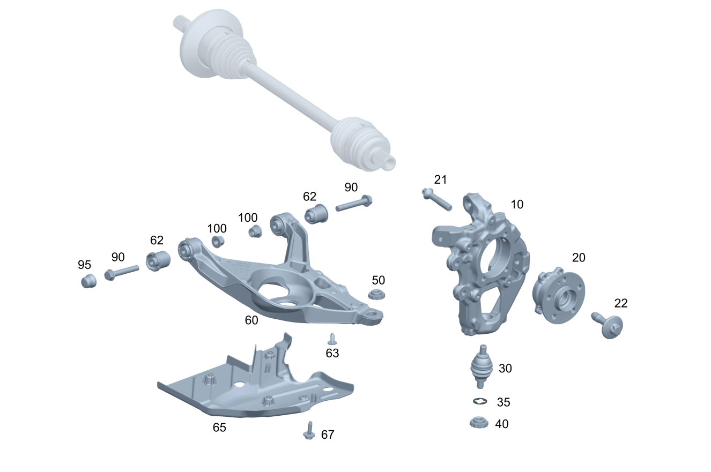

| № | Артикул | Название | Кол. | Примечание |
|---|---|---|---|---|
| 10 | A 167 357 21 00 | Кулак подвески (RADTRAEGER) | 1 | Слева |
| 10 | A 167 357 22 00 | Кулак подвески (RADTRAEGER) | 1 | Справа |
| 20 | A 167 356 02 00 | Подш. ступицы вед. колеса (RADLAGER, ANGETRIEBEN) | 1 | Кулак подвески слева |
| 20 | A 167 356 03 00 | Подш. ступицы вед. колеса | 1 | Кулак подвески слева |
| 20 | A 167 356 02 00 | Подш. ступицы вед. колеса (RADLAGER, ANGETRIEBEN) | 1 | Кулак подвески справа |
| 20 | A 167 356 03 00 | Подш. ступицы вед. колеса | 1 | Кулак подвески справа |
| 21 | A 002 990 65 03 | Винт Torx External (SCHRAUBE MIT SECHSRUND) | 4 | КОЛЁСНЫЙ ПОДШИПНИК, ЗАДНИЙ ЛЕВЫЙ; M12X57,5 |
| 21 | A 002 990 65 03 | Винт Torx External (SCHRAUBE MIT SECHSRUND) | 4 | КОЛЁСНЫЙ ПОДШИПНИК, ЗАДНИЙ ПРАВЫЙ; M12X57,5 |
| 22 | A 000 990 75 06 | Винт Torx External (SCHRAUBE MIT SECHSRUND) | 1 | Боковой вал слева, со стороны колеса; M16X1.5X60 |
| 22 | A 000 990 75 06 | Винт Torx External (SCHRAUBE MIT SECHSRUND) | 1 | Боковой вал справа, со стороны колеса; M16X1.5X60 |
| 30 | A 167 330 63 00 | Опорный шарнир (TRAGGELENK) | 1 | Снизу слева |
| 30 | A 167 330 63 00 | Опорный шарнир (TRAGGELENK) | 1 | Снизу справа |
| 35 | A 000 994 79 10 | - Стопорная шайба (SICHERUNGSSCHEIBE) | 1 | Нижний шаровой шарнир (левый) |
| 35 | A 000 994 79 10 | - Стопорная шайба (SICHERUNGSSCHEIBE) | 1 | Нижний шаровой шарнир (правый) |
| 40 | A 002 990 71 54 | Гайка 12-гран. с фланцем (12-KANTMUTTER MIT FLANSCH) | 1 | Нижний шаровой шарнир к левому кулаку подвески |
| 40 | A 002 990 71 54 | Гайка 12-гран. с фланцем (12-KANTMUTTER MIT FLANSCH) | 1 | Нижний шаровой шарнир к правому кулаку подвески |
| 50 | A 002 990 71 54 | Гайка 12-гран. с фланцем (12-KANTMUTTER MIT FLANSCH) | 1 | Нижний шаровой шарнир к левому поперечному рычагу |
| 50 | A 002 990 71 54 | Гайка 12-гран. с фланцем (12-KANTMUTTER MIT FLANSCH) | 1 | Нижний шаровой шарнир к правому поперечному рычагу |
| 60 | A 167 350 47 00 | Поперечный рычаг (QUERLENKER) | 1 | Снизу слева |
| 60 | A 167 350 48 00 | Поперечный рычаг (QUERLENKER) | 1 | Снизу справа |
| 62 | A 167 352 17 00 | - Опора поперечного рычага (QUERLENKERLAGER) | 2 | Поперечный рычаг слева |
| 62 | A 167 352 17 00 | - Опора поперечного рычага (QUERLENKERLAGER) | 2 | Поперечный рычаг справа |
| 65 | A 167 352 24 00 | Облицовка рычага стойки (VERKLEIDUNG FEDERLENKER) | 1 | К поперечине слева |
| 65 | A 167 352 25 00 | Облицовка рычага стойки (VERKLEIDUNG FEDERLENKER) | 1 | К поперечине справа |
| 67 | A 002 990 76 00 | Винт с 6-гр.гол. и шайбой (KOMBI-SECHSKANTSCHRAUBE) | 4 | Облицовка левого поперечного рычага; M6X24 |
| 67 | A 002 990 76 00 | Винт с 6-гр.гол. и шайбой (KOMBI-SECHSKANTSCHRAUBE) | 4 | Облицовка правого поперечного рычага.; M6X24 |
| 90 | N 000000 008319 | Винт с 6-гранной головкой (SECHSKANTSCHRAUBE) | 2 | Поперечный рычаг слева; к интегральной балке; M14X1,5X98 |
| 90 | N 000000 008319 | Винт с 6-гранной головкой (SECHSKANTSCHRAUBE) | 2 | Поперечный рычаг справа; к интегральной балке; M14X1,5X98 |
| 95 | A 164 352 00 59 | Защитный колпачок (SCHUTZKAPPE) | 1 | Поперечный рычаг снизу слева к интегральной балке |
| 95 | A 164 352 00 59 | Защитный колпачок (SCHUTZKAPPE) | 1 | Поперечный рычаг справа слева к интегральной балке |
| 100 | N 000000 008268 | Гайка (MUTTER) | 2 | Поперечный рычаг слева; к интегральной балке; M14X1,5 |
| 100 | N 000000 008268 | Гайка (MUTTER) | 2 | Поперечный рычаг справа; к интегральной балке; M14X1,5 |
| 110 | A 167 350 29 00 | Продольный рычаг (ZUGSTREBE) | 1 | Слева |
| 110 | A 167 350 30 00 | Продольный рычаг (ZUGSTREBE) | 1 | Справа |
| 120 | N 910105 012001 | Винт с 6-гранной головкой (SECHSKANTSCHRAUBE) | 1 | Продольный рычаг к кулаку подвески слева; M12X1,5X90 |
| 120 | N 910105 012001 | Винт с 6-гранной головкой (SECHSKANTSCHRAUBE) | 1 | Продольный рычаг к кулаку подвески справа; M12X1,5X90 |
| 125 | A 140 357 09 75 | Диск (SCHEIBE) | 1 | Продольный рычаг к кулаку подвески слева |
| 125 | A 140 357 09 75 | Диск (SCHEIBE) | 1 | Продольный рычаг к кулаку подвески справа |
| 130 | N 000000 008269 | Гайка (MUTTER) | 1 | Продольный рычаг к кулаку подвески слева; M12X1,5 |
| 130 | N 000000 008269 | Гайка (MUTTER) | 1 | Продольный рычаг к кулаку подвески справа; M12X1,5 |
| 140 | N 910105 012019 | Винт с 6-гранной головкой (SECHSKANTSCHRAUBE) | 1 | Продольный рычаг к интегральной балке, слева; M12X65 |
| 140 | N 910105 012019 | Винт с 6-гранной головкой (SECHSKANTSCHRAUBE) | 1 | Продольный рычаг к интегральной балке, справа; M12X65 |
| 150 | N 000000 008269 | Гайка (MUTTER) | 1 | Продольный рычаг к интегральной балке, слева; M12X1,5 |
| 150 | N 000000 008269 | Гайка (MUTTER) | 1 | Продольный рычаг к интегральной балке, справа; M12X1,5 |
| 160 | A 167 350 37 00 | CAMBER ARM (STURZSTREBE) | 1 | Слева |
| 160 | A 167 350 37 00 | CAMBER ARM (STURZSTREBE) | 1 | Слева |
| 160 | A 167 350 09 01 | CAMBER ARM (STURZSTREBE) | 1 | Слева |
| 160 | A 167 350 38 00 | CAMBER ARM (STURZSTREBE) | 1 | Справа |
| 160 | A 167 350 38 00 | CAMBER ARM (STURZSTREBE) | 1 | Справа |
| 160 | A 167 350 10 01 | CAMBER ARM (STURZSTREBE) | 1 | Справа |
| 170 | A 167 352 18 00 | - Сайлент-блок рыч.подвески (ACHSLENKERLAGER) | 1 | Слева |
| 170 | A 167 352 18 00 | - Сайлент-блок рыч.подвески (ACHSLENKERLAGER) | 1 | Справа |
| 180 | A 002 990 39 20 | Эксцентриковый болт (EXZENTERSCHRAUBE) | 1 | Верхняя поперечная тяга к балке заднего моста слева |
| 180 | A 002 990 39 20 | Эксцентриковый болт (EXZENTERSCHRAUBE) | 1 | Верхняя поперечная тяга к балке заднего моста справа |
| 185 | A 000 352 00 76 | Диск (SCHEIBE) | 1 | Верхняя поперечная тяга к балке заднего моста слева |
| 185 | A 000 352 00 76 | Диск (SCHEIBE) | 1 | Верхняя поперечная тяга к балке заднего моста справа |
| 190 | N 000000 008269 | Гайка (MUTTER) | 1 | Верхняя поперечная тяга к балке заднего моста слева; M12X1,5 |
| 190 | N 000000 008269 | Гайка (MUTTER) | 1 | Верхняя поперечная тяга к балке заднего моста справа; M12X1,5 |
| 200 | N 910105 012001 | Винт с 6-гранной головкой (SECHSKANTSCHRAUBE) | 1 | Верхняя поперечная тяга к кулаку подвески слева; M12X1,5X90 |
| 200 | N 910105 012001 | Винт с 6-гранной головкой (SECHSKANTSCHRAUBE) | 1 | Верхняя поперечная тяга к кулаку подвески справа; M12X1,5X90 |
| 205 | A 140 357 09 75 | Диск (SCHEIBE) | 1 | Продольный рычаг к кулаку подвески слева |
| 205 | A 140 357 09 75 | Диск (SCHEIBE) | 1 | Верхняя поперечная тяга к кулаку подвески справа |
| 210 | N 000000 008269 | Гайка (MUTTER) | 1 | Верхняя поперечная тяга к кулаку подвески слева; M12X1,5 |
| 210 | N 000000 008269 | Гайка (MUTTER) | 1 | Верхняя поперечная тяга к кулаку подвески справа; M12X1,5 |
| 220 | A 167 350 25 00 | Поперечная рулевая тяга (SPURSTANGE) | 1 | Слева |
| 220 | A 167 350 57 00 | Поперечная рулевая тяга (SPURSTANGE) | 1 | Слева |
| 220 | A 167 350 25 00 | Поперечная рулевая тяга (SPURSTANGE) | 1 | Справа |
| 220 | A 167 350 58 00 | Поперечная рулевая тяга (SPURSTANGE) | 1 | Справа |
| 230 | A 002 990 38 20 | Эксцентриковый болт (EXZENTERSCHRAUBE) | 2 | Поперечная тяга к балке заднего моста, слева и справа; M12X1,5,78 |
| 235 | A 000 352 00 76 | Диск (SCHEIBE) | 2 | Поперечная тяга к балке заднего моста, слева и справа |
| 240 | N 000000 008269 | Гайка (MUTTER) | 2 | Поперечная тяга к балке заднего моста, слева и справа; M12X1,5 |
| 250 | N 910105 012001 | Винт с 6-гранной головкой (SECHSKANTSCHRAUBE) | 2 | Поперечная тяга к кулаку подвески, слева и справа; M12X1,5X90 |
| 255 | A 140 357 09 75 | Диск (SCHEIBE) | 2 | Поперечная тяга к кулаку подвески, слева и справа |
| 260 | N 000000 008269 | Гайка (MUTTER) | 2 | Поперечная тяга к кулаку подвески, слева и справа; M12X1,5 |
Позиций: 74 · подписано на схемах: 74 · колесо — плавный зум в курсор, перетаскивание — пан, двойной клик — зум, клик по артикулу — скопировать.